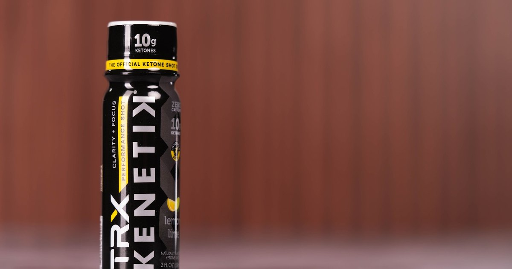

Informed Sport Certified: What Third Party Testing Actually Means
A label is a company describing itself. Certification is somebody else checking. Here is the difference, and who should actually care.

Every can and bottle in the performance aisle makes claims about itself. The label is written by the company selling it. That is not an accusation, it is just what a label is: a description the manufacturer wrote about its own product.
Third party certification is a different thing. An outside lab takes the finished product and tests it. The company does not get to grade its own work.
That gap is worth understanding, because for a specific group of people it is the difference between a drink and a career problem.
Why people search for Informed Sport certified energy drinks
The phrase people actually type is usually some version of "informed sport certified energy drinks," because energy drinks are the shelf they happen to be standing in front of. The search is right and the category is wrong.
Kenetik is not an energy drink. It is a ketone drink, caffeine free, and it sits in a different category. But the question behind that search is exactly the right question: which of these products has been checked by someone other than the brand selling it.
What Informed Sport actually is
Informed Sport is a certification program run by LGC, an independent laboratory group. Products in the program are screened for substances banned in sport, and the part that matters is that screening happens at the batch level. Not once at launch. Batches get tested before they ship.
That distinction is the entire value. A single test tells you one sample from one day was clean. Batch level testing is a claim about a process that keeps repeating.
Certified products are listed publicly. You can look a product up on the Informed Sport site and see what is actually certified rather than taking a printed logo at face value.
Who actually needs this
Most people drinking a ketone shot before a workout are not being tested for anything, and for them certification is a nice to have.
For a specific group it is not optional:
- Athletes under NCAA, USADA, WADA, or a professional league program
- Active duty military and anyone in a unit that screens
- Police, fire, and other first responders whose departments test
- Anyone working under a policy that does not distinguish between intent and result
Here is the failure mode certification exists to prevent. Dietary supplements in the United States are not approved by the FDA before they go on sale the way a drug is. Responsibility for what ends up in the bottle sits with the manufacturer. Most manufacturers are careful. Contamination still happens anyway, usually through shared equipment or an ingredient sourced upstream from somebody less careful.
The person who fails a test in that scenario did not cheat. They drank something containing a compound the label never mentioned. The testing body does not weigh intent. In most programs the athlete is responsible for what is in their body regardless of how it got there.
That is a strict liability standard, and it is the reason third party batch testing is worth more than any performance claim printed on the front of a can.
What certification does not mean
Being clear about the limits is most of the point of writing this.
Informed Sport certification says a batch was screened for banned substances. It does not say the product works. It does not say the product is healthy, or right for you, or better than the thing beside it on the shelf. It is not an endorsement of any benefit, and a brand presenting it as one is stretching it past what it covers.
It is a narrow claim, verified by an outside party. Narrow and verified beats broad and self reported.
Where Kenetik sits
Kenetik is Informed Sport certified. The rest of the label is short: 12 grams of ketones per can, zero caffeine, zero sugar, 60 calories, nothing artificial. The 2 ounce shot carries 10 grams of ketones plus electrolytes. It is the official ketone shot of TRX.
What it supports is clarity, focus, and cognitive endurance. That is the claim, stated as a support claim, and I am not going to inflate it into something it is not.
If you train fasted, I wrote the longer version of what ketones do before a session, and more usefully what they do not do, in Ketones Before a Workout.
How to check any product yourself
Four steps, about two minutes:
- Find the certification mark on the package, then set it aside as proof. Marks get printed.
- Search the certifier's own product list for the brand and the specific product. Informed Sport publishes theirs.
- Check whether the certification covers the item you are holding or a different product from the same brand. Certification is per product, and often per batch.
- Read the ingredient panel regardless. Screening covers banned substances, not the things you personally react to.
Do that once for each product you use regularly and you are ahead of almost everyone else in the aisle.
The short version
A label is a company describing itself. Certification is an outside lab checking one specific thing, narrowly, on a schedule.
If you get tested for anything, buy tested products and verify at the source instead of trusting a logo. If you do not get tested, certification is still the cheapest signal available that a company is willing to let somebody else look.
Caffeine free, sugar free, 12 grams of ketones. My link if you want to try it: drinkkenetik.com/EDDIEG.
I earn a commission on purchases through this link. This article is consumer information about product certification and is not medical advice.